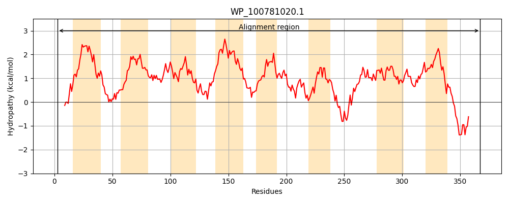
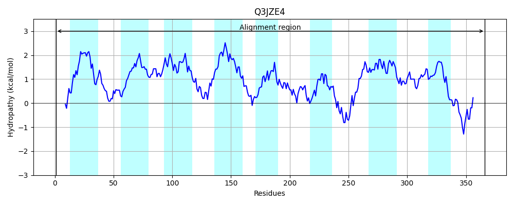
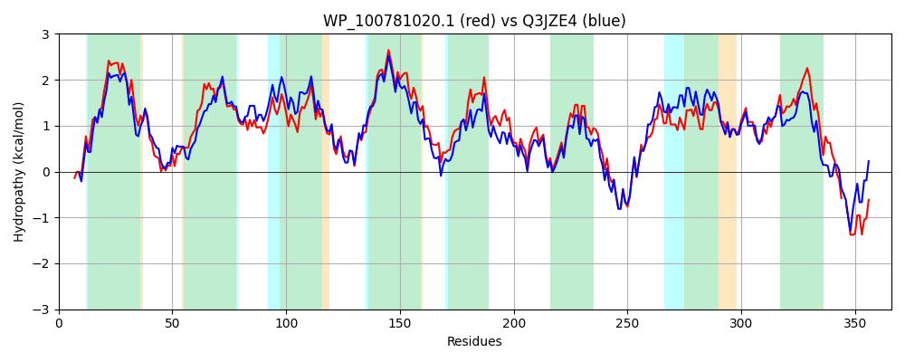

Hit Accession: Q3JZE4
Hit TCID: 4.A.2.1.22
Hit Description: gnl|BL_ORD_ID|13494 gnl|TC-DB|Q3JZE4|4.A.2.1.22 PTS system, fructose-specific, IIC component OS=Streptococcus agalactiae serotype Ia (strain ATCC 27591 / A909 / CDC SS700) GN=SAK_1759 PE=4 SV=1
Mach Len: 366
e:0.000000
Query TMS Count : 8
Hit TMS Count: 8
TMS-Overlap Score: 8.350000
Predicted Substrates:CHEBI:4233;D-ribofuranose, CHEBI:4093;D-allopyranose
BLAST Alignment:
Score: 1307 , Bit scores: 508 bits, E-value: 0.0e+00, Alignment length: 366, Percentage identity: 68
Query: 3 LKQIWQAANPKGHLLTAISFLIPIVCGAGFIIAIGMGLGGTVQDTLTLGQFDLWQAMATLGAKALGLLPVVIAVGISGSIAGKPGIAPGFVVGLAANTISAGFIGGMIGGYIAGYIALAIIKNVKVPDWARGLMPTLIVPFFASIISCLIMVYIIGTPIGIFTEALTSFLRSMGTSSNLVLGAVIGALCIVDFGGPLNKTCFAFVLTLQAQGINEPITALQLVNTATPIGFGLAFFIAKLLRKNIYNSEEVETLKSAVPMGIVNIVEGSIPIVMNDIVRGIAAAAIGGACGGAVTMVYGADATVPFGGVLMIPTMSHPMAGIMALLVNIVVTATVYAVIKKDIPR-DVMVTHDHEEEDIDLDDIKV 367
+K + + AN KGHLLTAIS+LIPIVCGAGF++AIGM +GG QD L +G F W MAT+G KALGLLPV+IA GI+ SIAGKPGIAPGFVVGL AN ISAGFIGG++GGYIAG+IAL I+KNVKVP+WA+GLMPTLIVPFFA+++S LIM+Y+IG PI FT LT FL+S+G +SNLV+GAVIG L VD GGPLNKT +AFVLTLQA+G+ EP+TALQLVNTATP+GFGLA+FIAKL +KNIY ++E+ETLKSAVPMGIVNIVEG IPIVMN+++ I A +GGA GGAV+M GAD+ VPFGG+LMIPTM+ P+AGI LL NI+VT VY++ KK + R +V + +EEDI LDDI++
Sbjct: 1 MKDMIKKANFKGHLLTAISYLIPIVCGAGFLVAIGMAMGGRAQDALVIGNFSFWDTMATMGGKALGLLPVIIATGIAFSIAGKPGIAPGFVVGLIANAISAGFIGGILGGYIAGFIALGILKNVKVPNWAKGLMPTLIVPFFAALLSSLIMIYLIGGPISAFTGWLTDFLKSLGNTSNLVMGAVIGVLSGVDLGGPLNKTVYAFVLTLQAEGVKEPLTALQLVNTATPVGFGLAYFIAKLFKKNIYTNDEIETLKSAVPMGIVNIVEGVIPIVMNNLMPAILAIGVGGAVGGAVSMTMGADSAVPFGGILMIPTMTRPIAGICGLLSNILVTGLVYSLAKKPVDRNEVTIVSAEDEEDIALDDIEI 366 | Protein Hydropathy Plots: |
|---|
|  |  |
Pairwise Alignment-Hydropathy Plot:
|
|---|
|  |